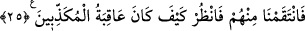

Böyle bir taklide iki yüz lânet olsun.
Gerçi onun akıl kuşu yükseklere doğru gitse de,
Taklid kuşu aşağılara doğru uçar.
25. Biz de onlardan intikam aldık. Bak, yalanlayanların sonu nasıl oldu?
Artık bir mazeretleri kalmayıp delil aleyhlerine sâbit olunca “biz de onlardan”
peygamberlerini yalanlayan bu ümmetlerden, bu inatçı taklitçilerden, onların kökünü
kazımak sûretiyle “intikam aldık. Bak, yalanlayanların sonu nasıl oldu?” Binâenaleyh
(Rasûlüm!) Kavminin seni yalanlamasına üzülme! Zîrâ Allah Teâlâ müntekım, kàhir ve
kàbıd ismiyle onlardan da intikam alacaktır.
Hz. Ali şöyle demiştir: “Mutlu kişi başkasının hâlinden öğüt ve ibret alandır.” Yani
iyi bahtlı olan kimse; kötü sözlerden uzak durması, beğenilmeyen işleri yapmaması
konusunda başkalarına verilen öğütten ders çıkaran ve öğütten ibret alan kimsedir.
Şa’bî’den şöyle rivâyet edilmiştir: Aslan, kurt ve tilki ava çıktılar. Bir vahşi merkeb,
bir ceylan, bir de tavşan avladılar. Aslan kurda “avları taksim et” dedi. Kurt, “vahşi
merkeb kral hazretlerinin yani zâtiâlinizin, ceylan benim, tavşan ise tilkinin nasibidir”
dedi.
Şâ’bî der ki: Aslan, pençelerini şöyle bir kaldırdı, kurdun kafasına kuvvetlice indirdi.
Kurt hemen oracıkta aslanın önünde yere düşüp öldü. Sonra aslan tilkiye “bu avları
aramızda sen taksim et” dedi. Tilki şöyle dedi: “Vahşi merkeb kral hazretlerinin öğle
yemeği, ceylan akşam yemeği, tavşan ise arada atıştırma nevalesi olur.” Aslan: “Vay be!
Ne güzel hükmettin. Sana bu adâleti kim öğretti?” dedi. Tilki: “Bu hükmü bana kurdun
başına gelenler öğretti” dedi.
Oysa insan, bütün varlıkların en akıllısı olmasına rağmen ibret almamaktadır.
Bazı kitaplarda şöyle bir husus anlatılmaktadır: Bir kral henüz bakire olan kızına,
“Hayatta en lezîz olan şey nedir?” diye sordu. Kız: “Şarap, zifâf, saltanat ve
hükümranlıktır” dedi. Kral bu cevaba öfkelenip kızını öldürmek istedi. Kız: “Allah’a
yemin olsun ki ben bunları tatmış değilim. Fakat şarap keyfinden sonra sendeki baş
ağrısını, daha sonra buna tekrar döndüğünü görüyorum. Yine annemin doğumda çekmiş
olduğu zorluk, çile ve ölümle yüzyüze gelmesini, sonra lohusalıktan temizlenince onu
senin yatağında görüyorum. Yine işçileri ve işten çıkarılıp ayrılmaları ânında yapılan
darp, zindan ve musâdere edilerek cezalandırıldıklarını görüyor, sonra büyük bir hırs
ve arzu ile yine senden iş taleb ettiklerini, kendilerine ve başkalarına yapılan kötü
muameleleri önemsemediklerini görüyorum. Bütün bunlardan bu üç husûsun en leziz
şeyler olduğunu anladım” dedi. Bunun üzerine kral kızını affetti.
Şeyh Sa’dî şöyle demiştir: